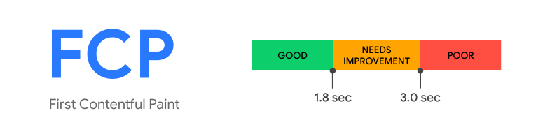

目录
目录
| 名字 | 描述 | 时间范围 | API 计算方法 |
|---|---|---|---|
| First Paint 首次绘制（FP） | 页面第一次绘制像素的时间 | ||
| First contentful paint 首次内容绘制 (FCP) | 任何部分在屏幕上首次完成渲染的时间（绘制的第一帧）[2] |  |
|
| Largest contentful paint 最大内容绘制 (LCP) | 页面从开始加载到可视区域内可见的最大图像或文本块完成渲染的相对时间[3] |

|
|
| Time to Interactive 可交互时间 (TTI) |
页面从开始加载到主要子资源完成渲染，并能够快速、可靠地响应用户输入所需的时间。[4]具体统计步骤为：
|
尽量控制在 5s 内 | |
| First input delay 首次输入延迟 (FID) | 用户第一次与页面交互直到浏览器对交互作出响应，并实际能够开始处理事件处理程序所经过的时间。[5] |

|
|
| Total blocking time 总阻塞时间 (TBT) | FCP 与 TTI 之间的时间，即无法作出输入响应的时间 | 尽量控制在 300ms 以内 |
window.onerror用于捕获 javascript 执行错误，它包含内联的脚本错误和使用 script 标签引入的文件中代码执行错误。
| 参数 | 类型 | 描述 |
|---|---|---|
| event | string | 报错信息 |
| source | string | 出现错误的文件 URL |
| lineno | number | 出错代码所在行数 |
| colno | number | 出错代码所在列数 |
| error | UIEvent | 错误对象，可以使用error.stack来查看错误堆栈 |
window.onerror = (event, source, lineno, colno, error) => {
console.log(`event: ${event}
source: ${source}
lineno: ${lineno}
colno: ${colno}
error.stack: ${error.stack}
`);
}
asd
需要通过封装并覆盖原生对象 / 方法来实现监控。
// 对于 IE（无法获取到之后动态插入的资源）
const entries = performance.getEntriesByType('resource');
console.log(entries);
// 对于非 IE
new PerformanceObserver(list => {
const entries = list.getEntries();
console.log(entries);
}).observe({ entryTypes: ['resource'] });
window.addEventListener('error', (event) => {
console.log(event);
}, true);